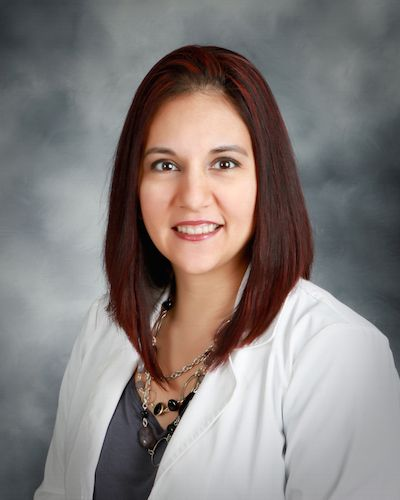

January 12, 2015
Dear valued patient,
It is with very thankful hearts that we announce the opening of our new clinic at 2645 Nall Street in Port Neches (formerly Hamby Medical Clinic). We began seeing patients at 2645 Nall Street in Port Neches in December. Please call 409.210.3336 if you need an appointment.
We will need to build a totally new file on each patient (sorry in advance for any inconvenience for these circumstances beyond our control). Please request a copy of your complete medical record from the clinic location you went to previously. Ideally, request a "CCD file" from the clinic, as we can import much of your medical record directly into our new system. We will also need to review all current medications/ supplements you are taking, so actually bring the bottles with you to your appointment.
Please note our new 2015 office hours:
Monday - Thursday, 8:00 a.m. to 5:00 p.m.
Friday, 8:00 a.m. to Noon.
Blessings to you and yours from our family and staff!
Sincerely,
K. Paul Gerstenberg, D.O., P.A.
Board Certified, Family Practice
Proverbs 22:1
Our Providers
K. Paul Gerstenberg, D.O.
Education:
Medical School: University North Texas - TCOM
Residency: St. Anthony Hospital, Oklahoma City, OK
Internship: Osteopathic Medical - FT. Worth, TX
Specialities: Board Certified in Family Medicine
More...

Brandi Wright, MSN, APRN, FNP-C
Education:
Bachelor of Science in Nursing: Lamar University- Beaumont, TX
Master of Science in Nursing: University of Texas Medical Branch- Galveston, TX
Licensure: Advanced Practice Registered Nurse- TX BON
Specialties: Certified Family Nurse Practitioner
More...